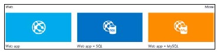
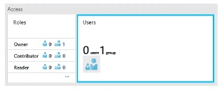

Create a Web App and SQL database: Step-by-step Guidance
Sign in to the Azure portal, click the +NEW button in the lower-left corner of the page. In the Create blade, select the Web + Mobile option. In the Web + Mobile blade, you will see options for creating various resources in Azure App Service, such as Web Apps, Mobile Apps, Logic Apps, and API Apps.
At the bottom of the Web + Mobile blade, click Azure Marketplace. In the Azure Marketplace, options are available for creating common Azure Web App environments, such as a web app with a SQL database or a web app with a MySQL database, as shown below:

Diagram (ii). Common Azure Web App environments can be created through multiple varying options.
Select the Web App + SQL option. This opens a blade describing the resources that this solution will create. Click the Create button at the bottom of the blade to begin configuring the web app and SQL database.
Under the Web App + SQL blade, specify Azure Resource Group name to create a new resource group. Choose the Web App (Configure Required Settings) option after entering a resource group name, to load the Web App blade.
Configuring Web App settings
In the Web App blade, specify a globally unique URL for the web app. Web apps are created in the *.azurewebsites.net domain and, therefore, must be unique to this domain. You can create a custom domain to map to this URL.
Next, specify an App Service Plan. Either choose an existing plan or create a new one. Next, enter a name in the text box. Creating a new App Service Plan will unlock the Pricing Tier and Location options in the Web App blade.
Click the Pricing Tier option and change it to D1 Shared. If D1 Shared option is not visible, click the View All link in the upper-right corner to show all the pricing tiers.
Click the Location option and select a region close to you.
Click the OK button at the bottom of the Web App blade. This will close the Web App blade and navigate back to the Web App + SQL blade.
Configuring SQL Database settings
Select the Database in the Web App + SQL blade, (Configure Required Settings) option to open the Database blade. Select the option to create a new database. If you have an existing SQL database, then you will have the option to select an existing database or create a new database.
Specify the name of the new SQL database you will create in the New Database blade, Optionally, you may choose to change the Pricing Tier for your Database (not the web app) and Collation settings.
Now select the Server (Configure Required Settings) option to open the New Server blade. In the New Server blade, specify a name for the server in which your database will be created and provide server admin credentials you later can use to sign in and manage the server.
Apply the required server settings by clicking the OK button at the bottom of the New Server blade. This will close the New Server blade and take you back to the New Database blade.
Apply the new database settings by clicking the OK button at the bottom of the New Database blade. This will close the New Database blade and take you back to the Web App + SQL blade.
The Create button at the bottom of the Web App + SQL blade will be enabled after all the required settings described above have been applied. Click the Create button to create the Web App and SQL database.
After a moment, the Azure Web App and SQL database (and server) will be provisioned and the Azure portal will open the Resource Group blade the resources were created in. In the Summary part of the blade, you can see all the resources that were created in the resource group.
Add an Azure Redis Cache to the Azure Resource Group
For applications that need caching, Azure’s Redis Cache as a service can be implemented. The Azure Redis Cache is based on the popular open source Redis Cache that is a distributed, in-memory cache service. It provides a level of performance and features unmatched by previous cache offerings in a way that is easy to use.
You can click on Add button at the top of the blade and add Azure Redis Cache in the Resource Group blade.
In the New Resource blade, select the Redis Cache option from the list of resources. Selecting this option will open a Redis Cache blade describing the services, pricing tiers, uses for the cache, and links to relevant resources. Click the Create button at the bottom of the Redis Cache blade to begin configuring the resource.
Enter a globally unique DNS name for the cache, choose a pricing tier, and choose a location. The Resource Group and Subscription will appear locked in the blade because the Redis Cache is being added to the current resource group.
Build an Azure Web App using Visual Studio
To create a web app in Visual Studio, the Server Explorer window in Visual Studio can be very useful. It provides features for provisioning and managing resources in subscription from within native development environment. It doesn’t offer all capabilities the Azure portal does, but for the resources for which it does provide management capabilities, it is a significant time saver. Using Server Explorer to create a web app produces a web app environment to which web application can be published.
Second approach to create web apps is to use the ASP.NET Web Application template to create a new web application project. Azure SDK Tools enables to target Web Apps or Virtual Machines when hosting in Azure. Creating a web app produces a web app environment and a web application project with the configuration needed to publish the web application to the host environment.
The most feature-rich approach to creating a web app is to use the Cloud Deployment Project template to create new web application project. This template further exposes the notion of Azure Resource Groups when creating a new project by producing both a web application project and a deployment project in the solution. The deployment project leverages the Azure Resource Manager to create the web app environment for your web application and includes Windows PowerShell scripts and JSON files describing the environment that you can use to automate the deployment to Azure.
The Server Explorer Approach
The Server Explorer window in Visual Studio has certain management capabilities that can be imported into your Visual Studio environment. This is useful in Dev environments some resources can be quickly provisioned and ideas can be developed or tested without moving from development environment.
Connect to your Azure Subscription by right-clicking the Azure icon and selecting the option to Connect To Microsoft Azure Subscription.
Right-click the App Service node and select the option Create New Site. This will open a single page dialog where you can specify settings for the web app.
Some of the limitations are as follows:
You have the option to select an existing plan or to specify the name to create a new plan. If you choose to create a new plan, the pricing tier will default to F1 Free.
The name of the SQL database will default to _db, where is the web app name specified at the top of the dialog. This cannot be changed.
You cannot specify the tier for your SQL database if you choose to create one.
There is no option to select a MySQL database. You would need to use the Azure portal if you want a MySQL database.
There is no option to add an Azure Redis Cache. You can add an Azure Redis Cache later by using the Azure portal.
The ASP.NET Web Application template Approach
Web application development involves navigating through the New ASP.NET Web Application Project Wizard in Visual Studio and selecting a desired template. Azure SDK Tools for Visual Studio allows configuring and provisioning Azure web app resources as you move through the wizard.
The Azure Resource Group template Approach
This is a template that's fairly recent and contains JSON files or templates that the Azure Resouce Manager uses to define your resources and to account for them. Using a Windows PowerShell script, redeployment is made easy and automated. Artifacts like an ASP.NET MVC Web Application project can be deployed to your web app resource if you so wish to do so.
Connection Strings and App Settings
The web.config file for an application was previously used to store application settings and connection strings in an encrypted format. This sensitive information was then available to the entire team through the source control system. Azure Web Apps improves on this situation with a solution to store connection strings and settings in the web app environment to be fetched dynamically during app run.
The application can then be published to different environments by storing these settings within the environment. No additional modification of config files and config transforms is required. RBAC can be used to control access.
Role Based Access Control
In order to manage the access control part of your Azure subscription, the Azure platform offers a feature known as Role Based Access Control or RBAC. This feature lets you decide how you want to grant access and distribute access permissions to various users or user groups.
RBAC is programmed via the Azure Resource Manager(ARM) REST APIs and is a part of the latest Azure portal. The Azure Active Directory is used for authentication of users and authorizing access to resources based on user roles.
Subscription-level Roles
There are three roles on the Azure platform that allow for RBAC implementation at the subscription level:
Owner: The owner is a built-in role that can create and manage all resource types including managing the access privileges to child resources. Owners are service administrators or co-administrator on a subscription. The level of permissions for the role applies to all subscription resources.
Contributor: The contributor is a built-in role that has less privileges than the owner, can create and manage resources but can't add or delete role assignments.
Reader: The reader is a built-in role that has access to read resources. 'Secrets' are inaccessible where secrets are app settings, connection strings and deployment credentials.
Diagram (iii). Access section of the Subscription blade showing the Users and Roles described above.
Resource-level Roles
The Azure Web App Resource provider introduces two additional roles specific to Web Apps namely the "User Access Administrator" and the "Website Contributor". These two roles are available along with the three built-in roles to assign roles for a particular resource. RBAC is most useful for its provision of assigning resource-level roles, wherein a user can be assigned a role for a single resource. This way, a user or group can be configured to have access to a single specific web app.
Conclusion
Here, in these articles, we have taken an introductory perspective with focus on what Azure Resource Groups are, followed by a look at App Service Plans, then several different ways to create Azure Web Apps. We have briefly touched upon storage/retrieval of connection strings and role-based access control for assigning access privileges.